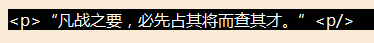

通常情况下，innerText和innerHTML的功能相似，都是设置元素的内容。但是当所写内容带有标签时，两者就出现区别了：innerText会直接在内容上显示标签，而innerHTML会自动识别标签并使用。
div.innerText = "<p>“凡战之要，必先占其将而查其才。”<p/>"
div.innerText显示结果
div.innerHTML = "<p>“凡战之要，必先占其将而查其才。”<p/>"
div.innerHTML显示结果
在jQuery中，html和text也是如此
$('#bin1').html("<p>Hello Word!</p>");
$('#bin2').text("<p>Hello Word!</p>");
$('#input1').val("<p>Hello Word!</p>");
注意：value和jQuery的val只适用于input标签
2.attr和removeAttrattr：设置或返回被选元素的属性值。
removeAttr:从每一个匹配的元素中删除一个属性
$('#img1').attr("src","../img/1.png"); //为#img的元素设置src属性(注意：attr里的属性写错不会报错)
$('#img1').removeAttr("src"); //为#img的元素移除src属性
3.addclass、removeClass和toggleClass
addclass：为每个匹配的元素添加指定的类名。
removeClass：从所有匹配的元素中删除全部或者指定的类。
toggleClass：如果存在（不存在）就删除（添加）一个类。
$("p").addClass("selected");
$("p").addClass("selected1 selected2");
$("p").removeClass("selected");
$("p").toggleClass("selected");